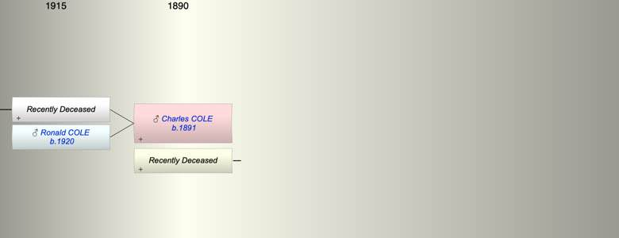

| [Index] |
| Charles Thomas COLE (1891 - ) |
|  |
| b. 20 Apr 1891 |
| m. Late |
| Near Relatives of Charles Thomas COLE (1891 - ) | ||||||
| Relationship | Person | Born | Birth Place | Died | Death Place | Age |
| Father in Law | Alfred Robert HURLEY | 14 Aug 1859 | Alphington | 1935 | 76 | |
| Mother in Law | Elizabeth SPEAR | 1858 | Petrockstowe Devon | |||
| Self | Charles Thomas COLE | 20 Apr 1891 | ||||
| Wife | Living or Recently Deceased | |||||
| Son | Living or Recently Deceased | |||||
| Son | Ronald A COLE | 10 Dec 1920 | ||||
| Daughter in Law | Ruby Grace Sarah CLARKE | |||||
| Grandson | Living or Recently Deceased | |||||
| Niece | Patricia Mary FOWKES | 1918 | Manchester | |||
| Niece | Audrey Sheila FOWKES | 1921 | Altricham | |||
| Brother in Law | Alfred Willam HURLEY | 1887 | Devonport | |||
| Brother in Law | Living or Recently Deceased | |||||
| Sister in Law | Vera Hilda Mary HURLEY | 1898 | Exeter | |||
| Events in Charles Thomas COLE (1891 - )'s life | |||||
| Date | Age | Event | Place | Notes | Src |
| 20 Apr 1891 | Charles Thomas COLE was born | dob ex 1939 Register | |||
| 10 Dec 1920 | 29 | Birth of son Ronald A COLE | ex 1939 Register | ||
| Created on a Mac™ using iFamily for Mac™ on 15 Sep 2023 |